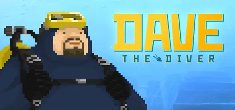

넥슨
우리나라에서 게임 부분에서 대기업 중에서도 대기업인 넥슨은 최근 들어서 기존의 행보를 이어가지 않고 미래를 생각하기 시작한 것 같습니다.
기존에 넥슨은 P2W 즉 게임에서 이기려면 또는 게임에서 원하는 목표를 성취하려면 매우 많은 시간 혹은 돈을 사용하도록 유도하는 비즈니스 전략을 내세웠습니다.
가장 대표적인 것이 넥슨의 메이플로 아이템을 강화시키는 방법이 많고 각각의 방법은 메이플의 게임머니가 매우 많이 필요합니다.
즉 게임을 오래하여서 게임머니를 벌거나 게임에 돈을 써서 게임머니를 사는 방법이 강요됩니다.
이 방법은 매우 돈이 됩니다.
이 비즈니스 모델은 다른 게임사인 NC에서 처음 시작해서 많은 한국 게임사에서 따라할 정도로 빠르게 확산 되었으며, 넥슨 또한 던전 앤 파이터, 메이플 등에서 이 비즈니스 모델을 사용하고 있습니다.
하지만 최근에 넥슨 데이브 더 다이버라는 게임을 내놓으면서 인식이 어느정도 변화하기 시작했습니다.

넥슨은 고객을 신경쓰지 않는다 또는 게임사는 고객을 신경쓰지 않는다라는 인식에서 넥슨은 그래도 미래를 생각하는 것 같다는 인식으로 좀 더 개선 되는 방향을 보이기 시작했습니다.
게임성이 있는 게임을 만들기 시작하고 악의적이라고 느껴질 수도 있는 비즈니스 모델에서 좀 더 탈출하려는 경향을 보이고 있습니다.